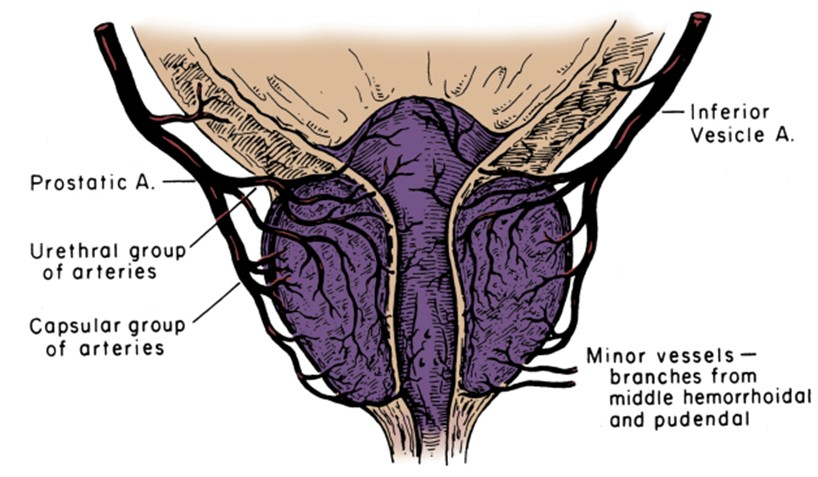

Não precisa mais de antibióticos e massagem retal!
Cientistas suíços fizeram um avanço no tratamento da prostatite crônica. Agora cada homem pode se livrar da inflamação da próstata em casa em apenas 7 dias!
A próstata é o segundo coração de um homem. Infelizmente, devido a fatores negativos, bem como após os 40 anos de idade, a próstata fica inflamada e aumenta o tamanho. Segundo estatísticas do Instituto Europeu de Saúde, a prostatite bacteriana ou não infecciosa está presente em um ou outro grau em 9 de cada 10 homens.
Apesar de uma patologia tão difundida, ainda não existe tratamento adequado e rápido para este problema. Modernos medicamentos e fisioterapia foram inventados 50-60 anos atrás. Infelizmente, são de pouca eficácia, além de prejudicar a nossa saúde (já que a base do tratamento são antibióticos fortes). Muitas vezes (em mais de 93% dos casos), a prostatite ocorre novamente após o tratamento. Por esse motivo, muitos médicos afirmam que a prostatite crônica é incurável.
No entanto, cientistas suíços descobriram uma maneira de tratar a próstata e livrar-se da prostatite PARA SEMPRE! Curioso que esse método ainda era usado por nossos antepassados. Os cientistas apenas o melhoraram. Esta remédio pode curar a prostatite em qualquer estágio e mesmo quando já levou a adenoma.
A abertura de cientistas suíços, em uma reunião com jornalistas, comentou Bruno Alves- o famoso urologista, andrologista, médico da primeira categoria, com experiência de mais de 30 anos
Jornalista: Senhor Alves, o quanto é a prostatite perigosa? É mesmo necessário tratá-lo?
Bruno Alves: A prostatite obrigatoriamente tem que ser tratada. A próstata, que afeta essa patologia, é um órgão extremamente importante. A saúde de um homem da grande parte depende da condição da próstata. A próstata desempenha diversas funções vitais: produz uma secreção prostática, controla a saída de urina, impede a penetração da infecção da uretra no trato urinário superior, produz prostaglandina E e regula o estado psicoemocional dos homens. É por isso que os problemas com esse órgão resultam no perigo de desenvolvimento de muitas patologias: impotência, inflamação dos rins e bexiga, diminuição da imunidade, diminuição da produção de testosterona e, como resultado, o envelhecimento rápido do organismo, doenças cardiovasculares e depressão.
Na ausência de tratamento, mesmo com prostatite crônica, ou seja, sem sintomas agudos, ocorrem alterações patológicas na próstata, que sempre levam a um adenoma e, posteriormente, ao câncer de próstata. Quando isso vai acontecer- é apenas questão de tempo. Nas algumas pessoas, a degeneração patológica do tecido da próstata ocorre rapidamente, nas outras- lentamente.
Além disso, a prostatite tem tendência de piorar. A cada agravamento, os sintomas só se tornam mais fortes. Os sintomas são: inflamação da próstata, dificuldade em urinar, dor nos testículos e região lombar, ardor e dores durante a micção, vontade de micção acontece mais frequentemente.
A prostatite não é uma doença insignificante. Negligenciando o tratamento, um homem literalmente encurta sua vida. A doença deve ser tratada o mais cedo possível.
Jornalista: Porque os métodos de tratamento tradicionais dão um efeito terapêutico baixo?
Bruno Alves: A prostatite é uma doença extremamente insidiosa e extremamente resistente. Era a opinião dos médicos até recentemente. Isto é devido ao fato de que os medicamentos atualmente disponíveis não foram capazes de curar a próstata. Desenvolvidos há muitas décadas, 90% deles servem apenas para eliminar os sintomas da doença, mas não para eliminar as causas.
Ou seja, são direcionados para aliviar a inflamação da próstata, a fim de facilitar a micção e remover a dor, além de combater a microflora patogênica, formada na secreção da próstata. Ajuda, mas por enquanto. A verdade é que é impossível de matar todas as bactérias, até a última. Algumas sempre permanecem. E, portanto, a prostatite em 93% dos casos aparece de novo já no próximo ano após o tratamento.
Para eliminar toda a microflora patogênica, são necessários antibióticos fortes, mas, para que funcionem, é necessário extrair o próprio agente patogênico da próstata. Para esse fim se prescreve a massagem retal, odiada por maioria dos homens.
É por causa da complexidade do tratamento que muitos preferem habituar-se com as inconveniências que a patologia traz nas suas vidas. É errado e, como já disse- perigoso. O novo método permite tratar a prostatite sem massagem retal e antibióticos, e essa é sua enorme vantagem. Pode ser aplicado mesmo em casa.
Jornalista: Conte-nos o que é a descoberta dos cientistas suíços?
Bruno Alves: Eles descobriram uma maneira que não apenas elimina os sintomas da prostatite, mas suas causas, o que é mais importante. Vou tentar explicar de uma maneira simples. Veja por que a prostatite ocorre? Por que os casos de sua aparição na juventude são poucos? E após 40 anos de idade aparece praticamente em cada um?
De fato, isso é conhecido há muito tempo. A causa da estagnação e o desenvolvimento de bactérias é a deterioração do suprimento de sangue para a próstata. É que esse órgão está literalmente envolto em uma rede de pequenos capilares. Com a idade, esses capilares ficam entupidos com colesterol, a rede capilar enfraquece. Como resultado, o suprimento sanguíneo e a nutrição da próstata pioram. E esse órgão é muito suscetível a isso, pois executa muitas funções diferentes e precisa de uma grande quantidade de nutrientes. Em fim, devido ao suprimento insuficiente de sangue, a próstata começa a funcionar incorretamente, o que leva à estagnação. Além disso, a imunidade da glândula diminui e deixa de lidar com micro-organismos patogênicos que se multiplicam.
Sistema de suprimento de sangue da próstata desenvolvido
Então o que foi que descobriram os cientistas suíços? Eles encontraram uma maneira de melhorar a rede capilar da próstata e restaurar o suprimento normal de sangue para a glândula. Os cientistas descobriram que os depósitos de colesterol nesta parte dos vasos são eficientemente destruídos pelos ácidos graxos ômega-insaturados (ômega-3, ômega-6, ômega-9) na proporção de 1:3:10. Além disso, os cientistas descobriram uma planta que contem esses ácidos na proporção certa. E esta planta é o cannabis, ou melhor, não a planta em si- mas suas sementes. De fato, as sementes de cannabis são o único produto natural que contem os ácidos graxos ômega-insaturados na proporção certa.
Os cientistas obtiveram óleo altamente concentrado a partir de sementes de cannabis e e realizaram os testes clínicos no Instituto de Urologia de Genebra. No total, no teste participaram cerca de 500 voluntários que sofrem de prostatite crônica. Quero vos mostrar os resultados, são mesmo incríveis!
Resultados de testes:
- Cura completa da prostatite- 96% dos participantes
- A inflamação diminuiu, a micção voltou ao normal- 100% dos participantes
- Aumentados do nível de testosterona- 87% dos participantes
- Potência recuperada- 91% dos participantes
- Desaparecimento de dores no períneo e durante a micção- 99% dos participantes
- Falta de dependência e sem efeitos colaterais- 100% dos participantes
Como pode ver, a porcentagem da eliminação completa de prostatite é mesmo muito alta. Ao comparar com tratamento tradicional, o tratamento com óleo CBD é 17 vezes mais eficaz. E ao mesmo tempo, o óleo em si é completamente natural e, portanto, não só não prejudica o corpo, mas, pelo contrário, o cura. Limpa os vasos sanguíneos em todo o corpo. Este é um verdadeiro avanço no tratamento da prostatite e na recuperação da potência.
Jornalista: O óleo de CBD altamente concentrado de cápsula será vendido nas farmácias europeias? Quando será disponível e ao que preço?
Bruno Alves: Como diz o fabricante, as entregas do para redes farmacêuticas europeias, incluindo o Portugal, começam a partir do 2022. Isso se deve ao fato de que o óleo de cannabis é um produto bastante escasso. Hoje, os campos de cânhamo, dos quais é feito o óleo, quase não existem na Europa.

Agora (e acho que vai continuar assim por mais alguns anos), o só pode ser adquirido no site oficial do fabricante .
Agora o preço... Agora é mínimo, já que o óleo de cannabis de alta concentração é vendido pelo fabricante, sem intermediários. Poe isso, este método de tratamento da prostatite está disponível para todos. O próprio óleo pode ser tomado sem receita médica.
A única coisa que deve ser lembrada é que o óleo de cannabis em cápsulas é vendido em quantidades limitadas, e o número de pedidos aumenta diariamente em uma progressão geométrica, à medida que mais e mais homens conhecem suas propriedades excelentes. É por isso que eu recomendo a todos encomendar o óleo mais rápido possível, enquanto ainda está disponível.
Atenção:
- O óleo de cannabis elimina a inflamação na próstata.
- Aumenta o desejo sexual logo após tomar.
- Normaliza fluxo urinário.
- Recupera a potência.
- Aumenta a vitalidade.
RESULTADOS DOS LEITORES
"Remédio incrível. Sofrei da prostatite mais de 10 anos. Não podia dormir bem- ia a casa de banho constantemente. E sobre sexo nem pensar- doeu tanto que não podia aguentar. Sofri eu e a minha esposa.
Eu experimentei muitos remédios para prostatite, mas o óleo de cannabis excedeu todas as minhas expectativas. Eu não só me livrei dos problemas de dor e micção, mas também voltou o interesse pelo sexo oposto, que já estava a desaparecer com a idade. Este remédio salvou a minha saúde e minha vida pessoal! Recomendo a todos!"
Bento Domingues
63 anos

"Seguindo o conselho do médico de família, decidi experimentar o sem ter muitas esperanças, pois já estava desesperado para encontrar um remédio eficaz para a prostatite.
Mas fiquei surpreendido e, claro, muito alegre, quando uma semana após o início do curso, senti melhorias significativas- a dor e a inflamação desapareceram. No final do curso a potência recuperou e as dores e desconforto eu já nem lembrava. Simplesmente fantástico."
João Sá
69 anos
José M.
Obrigado. Interessante. Encomendei o óleo. Já me cansei de prostatite.
Luiz P.
Também pedi. Já ouvi noutro lugar que o ajuda bem com prostatite e impotência. Não sabia é onde comprar. Obrigado por link!
Tiago F.
Sou um daqueles quem já experimentou. Ajudou. Deixei de correr a casa de banho toda hora. Dores sairam. Potência endureceu. Gostei de tudo. E é sem antibióticos e massagem!
Miguel B.
Apoio! Funciona mesmo. Tratei do prostatite 2 anos sem sucesso. Assim que comecei a tomar o óleo, a doença passou em dez dias. Recomendo a todos!
Mario C.
Também pedi. Tenho que experimentar. Já me cansei de tratar prostatite.
Diogo M.
Tenho prostatite crônico desde 38 anos. Agora tenho 41. Durante esses anos tratei o duas vezes quando tinha dores fortes. Na última vez os médicos mal conseguiram de me tirar. Disseram que só mais um pouco e ia para câncer de próstata. Por isso aconselho a todos quem tem prostatite, livrar-se dele mais rápido possível. É uma doença muito perigosa
Ivo C.
Li sobre óleo no site indicado . Impressionante! Deixei o pedido.
Hugo V.
Encomendei. 68 anos. Tenho prostatite há 3 anos. Existe um risco de adenoma de próstata. No mês passado, fui fazer uma massagem retal eletrônica da próstata- não vou desejar nem para inimigo, mal aguentei o curso de duas semanas, mas no final tudo acabou em vão.
Teresa F.
Tenho que comprar para o meu marido. Já tem prostatite por volta de 5 anos. Não tem potência nenhuma. E só tem 61 anos
Joaquim C.
Obrigado!
Alberto G.
É ótimo!!! Prostatite passa!! Aconselho a todos enquanto está disponível. Sinto me muito bem, todas as sintomas passaram em uns dias. Nada me ajudou tão bem.
Osvaldo C.
– é o melhor remédio que existe! Usei por volta de 3 meses. Parostatite passou completamente! Durou alguns anos. O meu menino mal se levantava e quando levantava gozava rápido. Agora tudo se normalizou!
Ricardo P.
Fui ao tempo
Diego S.
Estou a tomar há três dias. Estou me sentir melhor. Obrigado!
Pode encomendar o óleo de cannabis de alta concentração para aumento da potência masculina no site oficial
© 2018 Copyright. All Rights reserved.